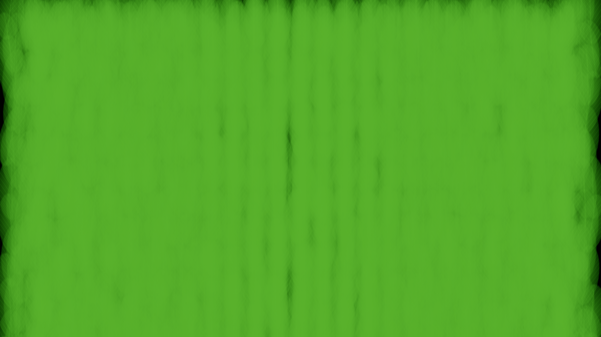

UE 场景渲染实验柔边卡片：覆盖面积与像素成本
1,950 个同布局实例，共用材质、相机与曝光。以更多三角形换取更贴近有效透明区域的网格轮廓。
同视点运行画面
测量与代价
| 指标 | 矩形 | 贴边网格 |
|---|
| 每实例三角形 | 2 | 6 |
| 每实例局部面积 | 20,000 cm² | 9,510.343 cm² |
Windows / RTX 4080 / D3D11 ES3.1，CSV 系统分辨率 888×500，独立截图 1600×900。六轮 ABBAAB，每轮 6,000 帧，统计第 3,500–5,499 帧，截图在第 5,950 帧。局部面积减少 52.45% 不等于屏幕过绘或整帧时间减少相同比例。
透明阶段耗时下降约 37.6%，整帧没有改善。三批透明阶段 P50 分别一致为 0.0870 与 0.0543 ms；整帧 GPUTime 为 0.7752→0.8090 ms。当前场景的整体成本受到其他阶段影响，局部收益需要结合负载评估。
4K 像素负载：整帧收益出现
保持同一场景、材质与布局，将运行视口设为 3840×2160。透明阶段从 0.8458 降至 0.7281 ms，减少 13.9%；整帧 GPU 时间从 1.5002 降至 1.3896 ms，减少 7.4%。像素成本增加后，覆盖优化对整帧的影响更明显。

Windows / RTX 4080 / D3D11 ES3.1 移动预览。六轮 ABBAAB，每轮 6,000 帧，统计第 3,500–5,499 帧。请求尺寸、CSV 系统分辨率与截图均为 3840×2160。关联 GPU 状态均为 P0，约 2865–2880 MHz；状态每 500 ms 采样。两组均为桌面 GPU 数据。
怎样隔离覆盖面积
两种网格使用相同平面 UV。八边形完整包住有效 alpha 椭圆，保留柔边和叶脉，去掉轮廓外的透明空白区域。几何更复杂，片元覆盖更少；是否获益取决于场景的像素与顶点成本。
初版多色半透明叶片在同一配置重复运行时也出现较大图像差异。为隔离实例混合顺序，受控材质固定源颜色 C，将变化放入 alpha：最终颜色为 C × (1 − ∏(1 − alpha))。数学上与顺序无关，实际结果仍受有限精度和光栅边缘影响。这一条件不推广为任意多色透明内容的等价保证。